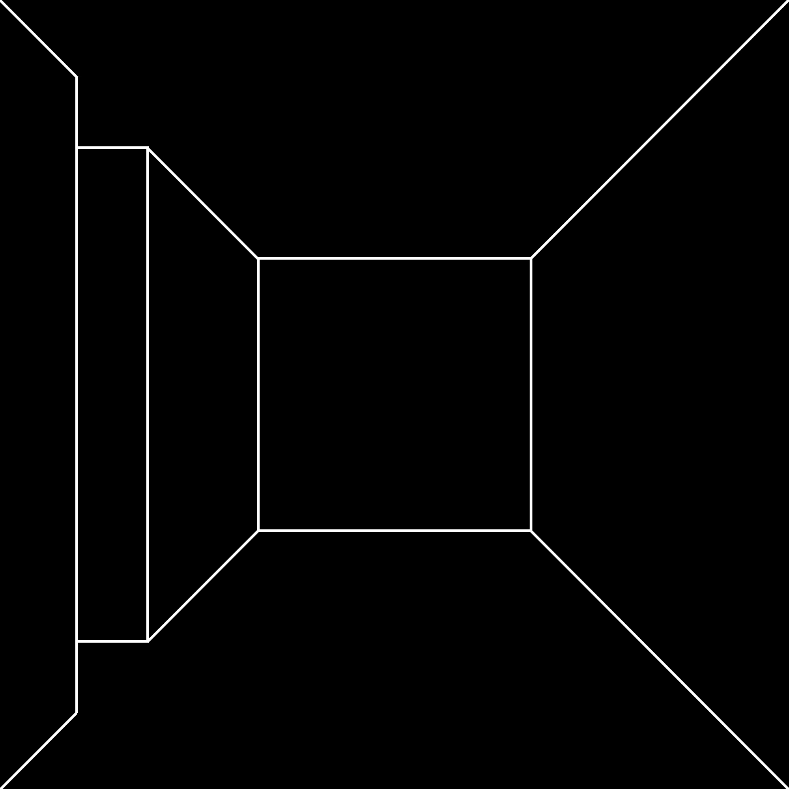

Paul Valéry, the French poet and thinker, once said that no poem is ever ended, that every poem is merely abandoned. This saying is also attributed to Stéphane Mallarmé, for where quotations begin is in a cloud.